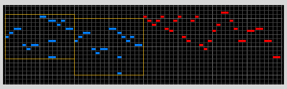

|
| Listening to the first four measures we can hear two two-measure patterns that each begin with a group of
six notes with this sequence of durations: |
| Eighth, Eighth, Quarter, Eighth, Eighth, Quarter |
| These six notes have been boxed in blue. |
| The second group of six is a diatonic transposition of the first group, down a second. |
| The first two-measure pattern takes us from a C chord (tonic) to a G chord (dominant), the second,
from a G7 chord (dominant) back to a C chord (tonic). |
| If we describe the tonic chord sounding like "home," then the dominant chord sounds "away and anxious to return home." |
| This movement from the tonic to the dominant and back again helps guide the ear in dividing the notes of the first four
measures into two phrases: "home-away" and "away-home." |
| These two two-measure patterns are followed by a long four-measure phrase
outlining a D7 chord and leading to a G chord. |
| This four measure phrase
is an extended "away" phrase that harmonically leads back to the C
chord at the beginning. |
| Here is a grapical representation. In these graphs, blue groups are short elements, red groups are long elements, and
gray groups are of no concern. The x-axis is time and the y-axis is pitch. |
|  |
| Thus the first eight measures have been divided as |
| Short (2 measures) |
Short (2 measures) |
Long (4 measures) |
|